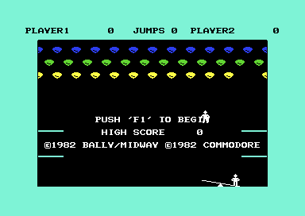
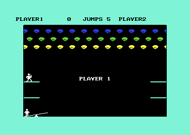
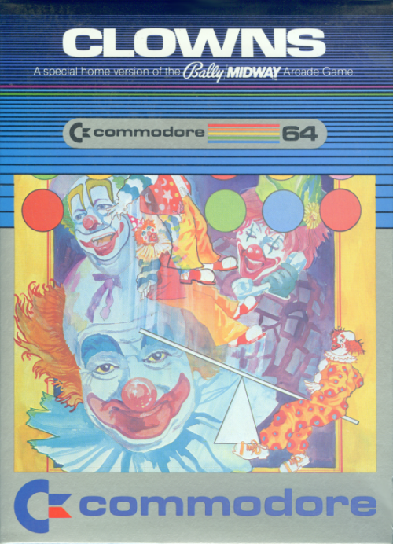

<meta charset="utf-8">
<meta name="viewport" content="width=device-width, initial-scale=1">
<title>Clowns</title>
<link rel="preconnect" href="https://fonts.googleapis.com">
<link rel="stylesheet" href="https://fonts.googleapis.com/css2?family=Lato:wght@400;700;900&family=IBM+Plex+Mono:wght@400;500&display=swap">
<style>
:root{
  --bg:#23262d; --paper:#e9e7e1; --surface:#ffffff; --surface-2:#f1efea; --line:#d5d3cc; --line-soft:#e0ded8;
  --ink:#2f3136; --ink-soft:#55585f; --ink-mute:#80838a;
  --link:#1f5fa8; --link-hover:#154480; --accent:#1f5fa8;
  --amber:#c25a00; --cyan:#1f5fa8; --coral:#d04a3a; --green:#2a8a4a; --violet:#4a5bd6; --hl:#fff0c2;
  --chip:#2f3136; --chip-ink:#ffffff;
  --c64blue:#40318d; --c64grey:#686868;
  --fd:'Lato',system-ui,sans-serif; --fb:'Lato',system-ui,sans-serif; --fm:'IBM Plex Mono',ui-monospace,Menlo,monospace;
  --col:1080px; --gx:68px; --fs:17px; --lh:1.6; --hw:900; --h1:46px; --h2:26px; --sy:48px; --pp:26px; --r:10px;
  --plate-shadow:0 1px 2px rgba(0,0,0,.05),0 4px 14px rgba(0,0,0,.05);
}
*{box-sizing:border-box}
html{background:var(--bg);min-height:100%}
body{background:var(--paper);color:var(--ink);font-family:var(--fb);font-size:var(--fs);line-height:var(--lh);max-width:var(--col);margin:0 auto;min-height:100vh;padding:0 0 4rem}
h1,h2,h3{font-weight:var(--hw);letter-spacing:-.01em;text-wrap:balance;color:var(--ink);margin:0}
.wrap{padding:0 var(--gx)}
.hero{padding:48px var(--gx) 8px;text-align:left}
.eyebrow{font-family:var(--fm);font-size:12px;letter-spacing:.08em;text-transform:uppercase;color:var(--ink-mute);margin:0 0 10px}
.hero h1{font-size:var(--h1);line-height:1.15;letter-spacing:-.02em;margin:0 0 14px}
.hero .sub{margin:0 0 .6em;color:var(--ink-soft)}
section{padding:var(--sy) 0 24px}
section:last-of-type{border-bottom:none}
.fig{font-family:var(--fm);font-size:12px;letter-spacing:.08em;text-transform:uppercase;color:var(--ink-mute);margin:0 0 10px}
h2.t{font-size:var(--h2);margin-bottom:12px}
.lede{color:var(--ink-soft);margin:0 0 30px}
.plate{background:var(--surface);border:1px solid var(--line);border-radius:var(--r);padding:var(--pp);box-shadow:var(--plate-shadow)}
.cap{font-size:14px;color:var(--ink-mute);margin-top:14px;line-height:1.55}
.cap b{color:var(--ink);font-weight:700}
code{font-family:var(--fm);font-size:.82em;background:var(--chip);color:var(--chip-ink);border-radius:4px;padding:2px 6px;white-space:nowrap}
.cl-pics{display:grid;grid-template-columns:1fr 1fr;gap:16px}
.cl-box{display:grid;grid-template-columns:220px 1fr;gap:22px;align-items:start}
.cl-code{display:grid;grid-template-columns:1fr 1fr;gap:22px}
.cl-code pre{color:var(--ink);font-family:var(--fm);font-size:13.5px;line-height:1.5;background:var(--surface-2);border:1px solid var(--line-soft);border-radius:6px;padding:12px 14px;margin:0;overflow-x:auto}
.cl-box img{width:100%;border-radius:4px;display:block}
.cl-box th{width:30%}
.cl-pics img{width:100%;image-rendering:pixelated;border-radius:4px;display:block}
.cl-row{display:flex;flex-wrap:wrap;gap:10px;align-items:center;margin:0 0 12px;font-size:15px}
.cl-row label{font-family:var(--fm);font-size:13px;color:var(--ink-soft)}
.cl-btn{font:inherit;font-size:14px;border:1px solid var(--line);background:var(--surface-2);border-radius:6px;padding:4px 12px;cursor:pointer;color:var(--ink)}
.cl-btn[aria-pressed=true]{background:var(--chip);color:var(--chip-ink);border-color:var(--chip)}
canvas.cl-cv{max-width:100%;image-rendering:pixelated;display:block;background:#000}
table.cl-t{border-collapse:collapse;font-size:15px;margin:8px 0 16px;width:100%}
table.cl-t th,table.cl-t td{border-bottom:1px solid var(--line-soft);padding:5px 10px;text-align:left;vertical-align:top}
table.cl-t th{font-family:var(--fm);font-size:12px;letter-spacing:.06em;text-transform:uppercase;color:var(--ink-mute);font-weight:500}
table.cl-t td.n{font-family:var(--fm);font-size:14px}
.cl-out{font-family:var(--fm);font-size:14px;color:var(--ink-soft);min-height:1.4em}
.cl-miss{font-size:14px;color:var(--coral)}
@media (max-width:700px){:root{--gx:16px;--h1:36px}.cl-pics,.cl-box,.cl-code{grid-template-columns:1fr}}
</style>
<!-- tabs -->
<header class="hero">
  <p class="eyebrow">1982 · Commodore</p>
  <h1>Clowns</h1>
  <p class="sub">Commodore's cartridge of the Bally/Midway arcade game takes the place of the C64's own operating system. Half of its 8 KB is the game's rules, compiled from a high-level language; the rest is hand-written machine code for the screen, the input and the sound, with the font and the sprites. That machine code tests every collision pixel by pixel, against the font.</p>
</header>
<main class="wrap">

<section id="game">
  <p class="fig">01 · The game</p>
  <h2 class="t">Two clowns and a see-saw</h2>
  <p class="lede">Turn the paddle to slide a see-saw under a falling clown, and the clown standing on the other end is thrown into the balloons.</p>
  <div class="plate"><div class="cl-pics"></div>
  <p class="cap"><b>The title screen and the start of a game</b>, in VICE. Above the playfield, the status line shows both scores and the current player's jumps.</p></div>
  <p>A clown runs off one of four platforms on the walls and falls towards the see-saw at the bottom of the screen. If it lands on the raised end, the see-saw tips, and the clown standing on the lowered end is thrown upwards. The thrown clown flies up into three rows of balloons that scroll across the top of the screen, and pops whatever it touches. When it comes down, the see-saw has to be under it again.</p>
  <p>Each player has five jumps. A clown that misses the see-saw falls flat and costs one, and the next clown starts from a platform. Blue balloons are worth 100, green 50 and yellow 20, each bounce 10; emptying a row pays a bonus and refills it. Two players take turns, each with their own balloons.</p>
  <p>The cartridge needs paddles in control port 1; the joystick does nothing. F1 starts a game, and F3 at the menu makes it two players.</p>
</section>

<section id="cartridge">
  <p class="fig">02 · The cartridge</p>
  <h2 class="t">Written for the MAX Machine, a C64 with 2 KB of RAM and no operating system</h2>
  <p class="lede">Clowns was a cartridge for Commodore's MAX Machine, sold in Japan in 1982, and the same 8 KB plug into a C64 and run there unchanged.</p>
  <div class="plate"><div class="cl-box">
  <table class="cl-t"><tbody>
    <tr><th>Publisher</th><td>Commodore</td></tr>
    <tr><th>Arcade original</th><td>Midway, 1978 (the title screen says &copy;1982 Bally/Midway)</td></tr>
    <tr><th>MAX Machine</th><td>cartridge 3509, ROM chip 325356-01, 8 KB, Japan, 1982</td></tr>
    <tr><th>Commodore 64</th><td>cartridge C-64606, USA and Canada; the box says &copy;1981, the title screen &copy;1982, the manual &copy;1983</td></tr>
    <tr><th>VIC-20</th><td>a cartridge of its own, 1982</td></tr>
    <tr><th>Programming, graphics, sound</th><td>not known: no names on the screen, the box, the manual or in the ROM, and the catalogues (C64-Wiki, GameBase64, the Centre for Computing History) name only Commodore. Wikipedia's list of MAX Machine software files it under Commodore Japan.</td></tr>
  </tbody></table></div>
  <p class="cap"><b>The front of the Commodore 64 box</b> (scan from <a href="https://elisoftware.org/wiki/Clowns_(C64,_Cartridge)_Commodore_International_-_1981_USA,_Canada_Release">Eli's Software Encyclopedia</a>, read 12 October 2026), "A special home version of the Bally Midway arcade game". Part numbers from the <a href="https://www.c64-wiki.com/wiki/Commodore_MAX_Machine">C64-Wiki's MAX Machine page</a> and Eli's; years from those, <a href="https://en.wikipedia.org/wiki/Clowns_(video_game)">Wikipedia</a> and the game itself. Whether this ROM image was read from a Japanese MAX cartridge or an American C64 one is not known; its text is in English.</p></div>
  <p>The MAX Machine, presented in Tokyo as the VICKIE and planned as the Ultimax in America and the VC-10 in Germany, went on sale in Japan in November 1982 for &yen;34,800 and was soon withdrawn. Inside it are the C64's processor, a version of its video chip and its SID, with 2 KB of RAM and no ROM of its own: no BASIC and no operating system. Switched on with no cartridge, it shows a blank screen. Everything a game needs, from the start-up code to the font, is on the cartridge, and the machine runs it from there (<a href="https://en.wikipedia.org/wiki/Commodore_MAX_Machine">Wikipedia</a>, <a href="https://www.c64-wiki.com/wiki/Commodore_MAX_Machine">C64-Wiki</a>, read 12 October 2026).</p>
  <p>A C64 runs those cartridges too. A cartridge that holds one line of the expansion port low and leaves the other high switches a C64 into the same arrangement, the Ultimax configuration: its own BASIC and operating system disappear, the cartridge sits where the operating system was, and the video chip sees the cartridge's top 4 KB. That is why this C64 cartridge looks the way it does, with no loader, its own reset vector, and a font read straight from the ROM (section 05).</p>
  <p>Clowns keeps to the MAX's 2 KB. Run on the kit's model of a C64 for 30,000 frames from power-on, through the title's demonstration, the menu and a game, it never read or wrote a byte of RAM above <code>$07FF</code>: its variables, the stack of the compiled program, the flying clown's sprite and the screen all fit in <code>$0000</code>-<code>$07FF</code>.</p>
  <p>The C-64 instruction leaflet (<a href="https://www.mocagh.org/forsale/clowns-manual.pdf">scan</a>) is one page of rules: switch the computer off before plugging the cartridge in, plug a paddle into port 1, press F1 for one player or F3 for two, and use the see-saw "to bounce his partner to the top of the center ring", a ring this version does not have. It lists the points: 20, 50 and 100 for yellow, green and dark blue balloons, 10 for each bounce, bonuses of 200, 500 and 1,000 for clearing a row, and "1 Bonus Jumper" for the dark blue row.</p>
</section>

<section id="music">
  <p class="fig">03 · The tunes</p>
  <h2 class="t">Music: three tunes on one voice</h2>
  <p class="lede">The game has three short tunes and no music during play. Each stops the game until it ends.</p>
  <div class="plate"><div id="cl-sid"></div>
  <p class="cap"><b>The page runs a port of the game's tune player</b>, <code>$F3AA</code>, through the site's model of the SID, once a tick of 10,001 cycles as the game's timer runs it. <code>test_music.js</code> holds the port against the game's own code on the kit's 6502 simulator: every tune, every write to the chip, tick by tick.</p></div>
  <p>A tune is a list of pitch words for voice 1 (<code>$FF17</code>) with a length in ticks for each note (<code>$FF73</code>), and a zero word at its end. Tune 0 plays when a game starts and with the bonus jump, tune 1 with a row bonus, and tune 2 after a fall in a game. Voice 1 is set up at power-on as a pulse with its gate held open, so the player only changes the pitch; it zeroes the pitch for each note's last tick, which is how two notes of the same pitch are heard apart.</p>
  <p>The tune player calls the clock routine itself, a tick at a time, and returns only when the tune has ended. Nothing else runs meanwhile, so the clown hangs in the air while "BONUS 1000" plays.</p>
  <p>The sound effects use the other two voices. Voice 2 plays the bounce, a pulse whose pitch falls for 32 ticks, and the whistle of a falling clown, 48 ticks of pitches from a table (<code>$FFA3</code>). Voice 3 pops a balloon with one tick of noise. The title screen's demonstration is silent: its volume is 0.</p>
</section>

<section id="sound">
  <p class="fig">04 · The sound effects</p>
  <h2 class="t">Sound: a falling bounce, a pop of noise and a whistle</h2>
  <p class="lede">Three effects, on the two voices the tunes leave free, each moved on once a tick by one routine.</p>
  <div class="plate"><div id="cl-sfx"></div>
  <p class="cap"><b>A port of the effects</b>, the three routines that start them and <code>sound_tick</code> (<code>$F36B</code>) that moves them on, played through the site's model of the SID once a tick. <code>test_sound.js</code> holds it against the game's own code, write for write.</p></div>
  <p>The bounce (<code>$F33B</code>) starts voice 2 as a pulse with no attack, sustained at half volume, and lets the gate go on the next tick; for 32 ticks its pitch falls a step a tick, from <code>$023E</code> to <code>$0200</code>, while the note fades over a release of about three quarters of a second. The pop (<code>$F34E</code>) gates voice 3's noise for a single tick. The falling clown's whistle (<code>$F358</code>) opens voice 2 with a slow attack and walks through 24 pitches from a table (<code>$FFA3</code>), two ticks each, from the end of the table back to its start, and closes the gate on the last.</p>
  <p>The routine that moves them on runs only one effect on voice 2 at a time: while a bounce is sounding, a whistle started meanwhile waits. Nothing plays in the title screen's demonstration, where the routines that start an effect see the sound flag off and return.</p>
</section>

<section id="frame">
  <p class="fig">05 · One frame, rebuilt from memory</p>
  <h2 class="t">The screen's letters and the see-saw are drawn straight from the cartridge</h2>
  <p class="lede">On a C64 the video chip draws every letter and sprite from shapes in memory. Clowns lets it read most of those shapes from the cartridge itself.</p>
  <div class="plate"><div class="cl-row"><button class="cl-btn" id="cl-f1" aria-pressed="true">With the cartridge</button><button class="cl-btn" id="cl-f0" aria-pressed="false">RAM only</button></div>
  <canvas class="cl-cv" id="cl-frame"></canvas>
  <p class="cap"><b>One frame of play, drawn by this page</b> from the game's memory, not a screenshot: the video chip's registers and the RAM it reads, recorded in VICE (x64sc, PAL) on 11 October 2026, with the cartridge's bytes from the Source tab. It matches the emulator's picture of the same frame in every one of its 104,448 pixels. "RAM only" draws the same frame with the cartridge's bytes taken away: the letters, walls, balloons and see-saw disappear.</p></div>
  <p>The video chip builds the picture from shapes: eight bytes for each character of the font, 63 for each sprite. A game normally keeps those shapes in RAM, or uses the font in the C64's own character ROM, and the chip reads them from there on every frame.</p>
  <p>Clowns is an Ultimax cartridge, the kind made for Commodore's MAX Machine. Plugged in this way, the cartridge takes the place of the C64's operating system at <code>$E000</code>-<code>$FFFF</code>, and its top 4 KB also appear in the video chip's view of memory, at <code>$3000</code>-<code>$3FFF</code>. The game tells the chip to take its font from <code>$3800</code> and its see-saw sprites from <code>$3BC0</code>, which puts both in the cartridge, at <code>$F800</code> and <code>$FBC0</code>. Nothing is copied: on every frame the chip reads the letters, walls, platforms, balloons and the see-saw straight from the ROM. Only the screen's layout and the flying clown's sprite, which the game rebuilds for every pose, are in RAM.</p>
  <p>Copies of the game made for an ordinary C64 have to imitate this. The disk version circulated by c64.com copies the cartridge's 8 KB to <code>$2000</code>-<code>$3FFF</code> as well as to <code>$E000</code>, so that the same 4 KB sit at <code>$3000</code> in RAM, where the video chip expects them.</p>
</section>

<section id="twoplayer">
  <p class="fig">06 · Two players</p>
  <h2 class="t">Bug: player 1 comes back with 255 jumps</h2>
  <p class="lede">In a two-player game where player 1 runs out of jumps first, player 1 keeps getting turns, and the first fall takes the jump counter from 0 to 255.</p>
  <div class="plate"><div class="cl-row"><button class="cl-btn" id="cl-bp">Previous fall</button><button class="cl-btn" id="cl-bn">Next fall</button><span class="cl-out" id="cl-bs"></span></div>
  <canvas class="cl-cv" id="cl-bug"></canvas>
  <table class="cl-t" id="cl-bt"><thead><tr><th>Fall</th><th>Player who fell</th><th>Jumps after</th><th>Row 15 says</th><th>Next turn</th></tr></thead><tbody></tbody></table>
  <p class="cap"><b>A replay of a test in VICE.</b> During player 2's turn the jumps were set to 0 for player 1 and 3 for player 2, and the clowns were left to fall. The status line is drawn from the game's font as the game writes it; the jumps cell is the game's character <code>$40</code> + the count's low seven bits.</p></div>
  <p>After a fall that costs a jump, the flight routine (<code>$EB4D</code>) checks whether player 2 has jumps left. If so, it prints "GAME OVER PLAYER 1" when player 1 has none, and then passes the turn to the other player in any case. Nothing checks that the other player has jumps.</p>
  <p>Player 1, with none, gets the next turn. Losing that clown takes the counter below zero, to 255, and the game goes on alternating. The main loop ends the game only when both counters are zero, so player 1 now has 255 more jumps, and the status line's digit becomes character <code>$BF</code>, eight bytes of clown shapes drawn as a letter. When player 2 runs out first, the check fails, and player 1 plays on alone, as intended.</p>
</section>

<section id="seesaw">
  <p class="fig">07 · The see-saw</p>
  <h2 class="t">Where the clown lands decides how the other one flies</h2>
  <p class="lede">Only the 24 pixels at the raised end catch a clown, in four zones of six pixels, and each zone throws differently.</p>
  <div class="plate"><div class="cl-row"><label>Zone</label><span id="cl-zones"></span><label>Speed level</label><span id="cl-levels"></span></div>
  <canvas class="cl-cv" id="cl-saw"></canvas>
  <p class="cl-out" id="cl-sawout"></p>
  <p class="cap"><b>Where a falling clown is caught.</b> The see-saw's sprites (<code>$FBC0</code>), left end down, with the catching window over the raised end: the 24 positions of the falling clown's left edge, 21 to 44 pixels right of the see-saw's x, in four zones. Zone 0 is the tip. The speeds above are each zone's starting values from the tables <code>init_tables</code> fills at power-on (<code>$E444</code>), before the random part and the growth described below.</p>
  <p style="margin:28px 0 8px"><b>Where the other clown flies: 24 throws</b></p>
  <div class="cl-row"><label>Balloons and bounces since the last speed change <input type="range" id="cl-k" min="0" max="40" value="0"></label><span class="cl-out" id="cl-kv"></span></div>
  <canvas class="cl-cv" id="cl-arc"></canvas>
  <p class="cap"><b>Each white line is the path of the thrown clown</b>, for the zone and speed level picked above. The falling clown lands in that zone of the see-saw at x 120, and the clown on the other end is thrown from the left; the game adds random numbers to every throw, so the 24 lines are 24 throws with different ones. Move the slider to see the throws grow steeper as a jump goes on: the more balloons popped and bounces made since the speed last changed, the harder the throw up. The lines stop at the ceiling or where the clown comes back down; walls and balloons are left out, so a line can pass through the balloon rows (the coloured dots), where in the game the clown would pop balloons and be knocked about. The paths come from a port of the game's flight (<code>$E63C</code>), which <code>test_flight.js</code> holds against the game's own code: 320,389 ticks and 1,955 launches, every variable the same.</p></div>
  <p>A clown falling at y 176 or lower is caught if its x is in the window (<code>$E6C2</code>); once it passes y 184 it is down. The zone picks the other clown's launch from two tables, across and up, and the launch then grows with the jump: a term proportional to the balloons popped and the bounces made at this speed level, times 16 to 26, is added to the upward speed. At speed level 0 both speeds are halved twice, at level 1 once, and the upward speed is never more than 6 pixels a tick.</p>
  <p>The thrown clown leaves from the other end of the see-saw, which then tilts the other way, so the window is always over the end where the last clown stood.</p>
  <table class="cl-t"><thead><tr><th>Speed level</th><th>Gravity, per tick</th><th>Next level</th><th>Balloons to the next</th></tr></thead><tbody id="cl-lvt"></tbody></table>
  <p>Every jump starts at level 0. Popping balloons moves the level on: to 1 after the first one to three balloons, to 2 after nine or ten more, and back to 1 after another 49 or 50, so a long jump swings between the two faster levels. Pops count only after the clown has bounced on the see-saw since the last change (<code>$E9B8</code>).</p>
</section>

<section id="collide">
  <p class="fig">08 · Collisions</p>
  <h2 class="t">Every collision is tested pixel by pixel against the font</h2>
  <p class="lede">The walls, the ceiling, the platforms and the balloons are all characters. The game works out which of them the clown's pixels touch, without the video chip's collision registers.</p>
  <div class="plate"><div class="cl-row"><label>x <input type="range" id="cl-cx" min="0" max="72" value="22"></label><label>y <input type="range" id="cl-cy" min="0" max="44" value="8"></label><label>Frame <select id="cl-cf"></select></label></div>
  <canvas class="cl-cv" id="cl-col"></canvas>
  <p class="cl-out" id="cl-colout"></p>
  <p class="cap"><b>A port of <code>draw_clown</code></b> (<code>$F034</code>) on a piece of the playfield: the ceiling and a row of balloons, in the game's font. The nine cells it tests are outlined, red where a pixel of the clown meets a pixel of the character. <code>test_collide.js</code> checks the port against the game's own routine on the kit's 6502 simulator over thousands of random screens, frames and positions.</p></div>
  <p>Each tick the clown's frame, 16 pixels square, is copied into a mask three characters wide and 24 rows tall, shifted right by the clown's x modulo 8 and down by its y modulo 8 so that it lines up with the character grid. For each of the nine cells under the clown, the game reads the character on the screen, takes its eight rows from the font, and ANDs them with the mask. A cell with a shared pixel reports its character code.</p>
  <p>The codes decide what happens (<code>$E8E9</code>). The left and right walls (characters 85 and 86) reverse the clown across, the ceiling (87) reverses it upwards, and a platform's top (89) gives a falling clown a small hop. Any balloon character pops that balloon. An odd number of balloons popped in one tick knocks the clown back the way it came; an even number lets it fly straight through.</p>
  <p>The C64's video chip detects collisions too, but it cannot answer this question. Its register for sprites touching the background, <code>$D01F</code>, holds one bit for each sprite: set when any pixel of that sprite has met any pixel of a character, and cleared when it is read. It says that sprite 0 hit something, not what or where, and the game needs to know whether that was a wall, the ceiling, a platform or a balloon, which balloon, and how many. Testing the cells itself gives the character codes, and the codes say all of it. Nothing suggests the hardware was missing on the machine it was written for: the cold start reads the collision registers once, to clear them (<code>$F776</code>), and the game never reads them again. Clowns came out on a VIC-20 cartridge in 1982 as well; whether this routine began in that version is not known.</p>
</section>

<section id="balloons">
  <p class="fig">09 · The balloons</p>
  <h2 class="t">The balloons scroll a pixel at a time by swapping between eight drawings of each balloon</h2>
  <p class="lede">The screen is a grid of 8 by 8 pixel cells, so writing a balloon one cell further along would move it eight pixels at a jump. The game moves it one pixel at a time without moving anything on the screen.</p>
  <div class="plate"><div class="cl-row"><label>Position, in pixels <input type="range" id="cl-bpos" min="0" max="23" value="0"></label><span class="cl-out" id="cl-bposo"></span></div>
  <canvas class="cl-cv" id="cl-bcell"></canvas>
  <p class="cap"><b>One balloon on a strip of the screen's cells</b>, drawn from the game's font. Move the slider: each pixel picks the next drawing of the balloon, and every eighth pixel the balloon's three characters start one cell further right. The cell borders are drawn in here; on the C64 the cells never move.</p>
  <canvas class="cl-cv" id="cl-glyphs" style="margin-top:18px"></canvas>
  <p class="cap"><b>All eight drawings</b>, characters 96 to 119 of the font (<code>$FB00</code>), three characters each, with the borders between the characters marked. Each copy is the balloon one pixel further right; the third character is the room it slides into.</p>
  <div class="cl-row" style="margin-top:18px"><button class="cl-btn" id="cl-bal" aria-pressed="true">Scroll</button></div>
  <canvas class="cl-cv" id="cl-rowcv"></canvas>
  <p class="cap"><b>A whole row of twelve balloons</b> scrolled the way the game does it, from those characters alone.</p></div>
  <p>The video chip can scroll smoothly by itself: the low three bits of <code>$D016</code> shift the picture zero to seven pixels sideways. That register moves the whole screen at once, and moving one band of it alone means changing the register on the right raster line in every frame, which needs an interrupt or a program waiting for the beam. Clowns has neither, and its three rows move at the same time in two directions, so it does the scrolling in the font instead.</p>
  <p>The font holds each balloon eight times, each copy one pixel further right inside a strip three characters wide. Every third tick (<code>$F1E7</code>), each row's fine position steps on by one, from 0 to 7, and the routine rewrites the row's 36 cells with the matching copy of each of its twelve balloons: characters 96 + 3 &times; position to 98 + 3 &times; position. When the position wraps from 7 back to 0, the row's first column moves on by one cell, so copy 0 starts where copy 7 left off. The top and bottom rows step forwards through the copies and move right; the middle row steps backwards and moves left. A popped balloon is written as three spaces.</p>
</section>

<section id="score">
  <p class="fig">10 · The score</p>
  <h2 class="t">The score is kept in tens, and the last 0 is a sixth digit that can never be anything else</h2>
  <p class="lede">The status line shows six digits, but the variable behind them counts tens of points.</p>
  <div class="plate"><div class="cl-row"><label>Score variable <input type="number" id="cl-sv" min="0" max="65535" value="77"></label></div>
  <canvas class="cl-cv" id="cl-scv"></canvas>
  <p class="cl-out" id="cl-sout"></p>
  <p class="cap"><b>A port of the score printer</b> (<code>$F69B</code>), drawn with the status line's own reversed digits. <code>test_digits.js</code> checks it against the game's routine for every value from 0 to 65,535.</p></div>
  <p>Each player's score is a 16-bit number of tens (<code>$021D</code>-<code>$0220</code>): a bounce adds 1, a blue balloon 10. The printer divides by repeated subtraction, with a table of divisors at <code>$FFD0</code>: 10,000, 1,000, 100, 10, 1, and last 4,115. By the time it reaches the sixth divisor the remainder is 0, so the sixth digit is always 0. The 4,115 is the table's neighbour, the last three bytes of the falling whistle's pitch table, read as one more divisor.</p>
  <p>The highest score the variable can hold, 65,535 tens, shows as 655350. One more bounce wraps it to 0.</p>
</section>

<section id="paddle">
  <p class="fig">11 · Controls</p>
  <h2 class="t">The see-saw trails the paddle by a quarter each tick</h2>
  <p class="lede">The see-saw does not jump to where the paddle points. Each tick it moves a quarter of the way there.</p>
  <div class="plate"><div class="cl-row"><label>Paddle reading <input type="range" id="cl-pr" min="0" max="255" value="40"></label><span class="cl-out" id="cl-pout"></span></div>
  <canvas class="cl-cv" id="cl-pcv"></canvas>
  <p class="cap"><b>A port of the paddle routine</b> (<code>$F189</code>): the see-saw's x tick by tick after the reading jumps from where it was to the new value. <code>test_paddle.js</code> checks it against the game's routine on the kit's 6502 simulator.</p></div>
  <p>Player 1 turns the first paddle of port 1 and player 2 the second (<code>$D419</code> and <code>$D41A</code>). The routine takes 200 less the reading, at least 0, times 1.25, and mixes it with three parts of the last position (<code>$F7E7</code>). The see-saw is then drawn at that x, but at least 17, as two sprites 24 pixels apart. The paddles' fire buttons start a game, like F1, and choose two players, like F3.</p>
</section>

<section id="build">
  <p class="fig">12 · How the program is built</p>
  <h2 class="t">Half the cartridge is compiled code that calls machine code by number</h2>
  <p class="lede">The game's rules are a program compiled from a high-level language. The drawing, the input and the sound are 25 routines of hand-written machine code.</p>
  <p>Every byte on the cartridge is machine code: the C64's processor runs nothing else. What differs is how the programmers made it. The library of routines at <code>$F000</code>-<code>$F7FF</code>, which draws, tests collisions, scrolls and plays sound, was written in assembly, one processor instruction at a time by hand, and it shows: short, fast, and full of tricks such as an instruction hidden inside another's operand so that two routines can share their code (<code>$F1A6</code>). The game's rules at <code>$E000</code>-<code>$EFFF</code>, the title, the menu, the physics and the scoring, were written in a language closer to English, with lines like "while either player has jumps left", and a compiler turned them into machine code. A compiler of that time builds everything from the same few templates, and the templates show.</p>
  <div class="plate"><div class="cl-code">
  <div><p class="fig">What the compiler made, <code>$E386</code></p><pre>LDA $0221   ; player 1's jumps
ORA $0222   ; or player 2's
CMP #$00    ; is the sum 0?
BEQ +4
LDA #$00    ; no: "false"
BEQ +2
LDA #$FF    ; yes: "true"
BEQ $E37C   ; false: another jump</pre></div>
  <div><p class="fig">What a programmer would write</p><pre>LDA $0221   ; player 1's jumps
ORA $0222   ; or player 2's
BNE $E37C   ; any left: another jump</pre></div>
  </div>
  <p class="cap"><b>The main loop's test "does either player have jumps left?"</b>, as the cartridge holds it and as it would be written by hand. The compiler first turns the comparison into a value, <code>$00</code> for false or <code>$FF</code> for true, and then tests that value; every comparison in the compiled half is built the same way.</p></div>
  <p>The other marks of the compiler: every procedure starts and ends with the same pair of calls, which keep a stack of their own for its arguments (<code>$E00C</code>, <code>$E020</code>); text is printed from bytes placed right after a call; and a standard library is linked in whole, routines the game never uses among it, such as 16-bit multiply and divide and an error message, "ERR DIV0".</p>

  <div class="plate"><table class="cl-t"><thead><tr><th>Number</th><th>Routine</th><th>What it does</th></tr></thead><tbody id="cl-mlt"></tbody></table>
  <p class="cap"><b>The routine table at <code>$F000</code></b>, read from the Source tab's bytes, with each routine's name from the listing. The compiled program never asks for numbers 3, 11 and 12.</p></div>
  <p>In detail: every procedure begins with a call that opens a frame on the compiled program's own stack (<code>$E00C</code>) and ends with a jump that closes it (<code>$E020</code>); arguments are written just past the caller's frame, and the main program's frame, <code>$0200</code>-<code>$0243</code>, holds every global variable.</p>
  <p>To reach the machine code, the compiled program calls one procedure (<code>$EB01</code>) with a number and three values. The procedure looks the number up in the table above and calls the routine with the values in the processor's three registers; results come back in zero page, where a function reads them. Which language and compiler produced the code is not known.</p>
  <p>The unused part of the library also holds a routine to print a byte in decimal, and the division-by-zero error jumps to <code>$7000</code>, where the cartridge has nothing. The printing library also has an output device that jumps to <code>$FFD2</code>, the KERNAL's routine for printing a character. On this cartridge that address is a byte of the score printer's table. The game only ever prints to the screen through its own routine.</p>
</section>

<section id="timing">
  <p class="fig">13 · Timing</p>
  <h2 class="t">No interrupts: a CIA timer is the game's clock</h2>
  <p class="lede">The game never enables interrupts and never waits for the video frame.</p>
  <p>The interrupt vectors point at a lone return instruction (<code>$F765</code>), and nothing reads the raster register. Instead, the clock routine (<code>$F711</code>) waits for CIA 1's timer A, loaded with 10,000 cycles and set to run once, to run out, then starts it again. Every loop of the game calls it once a pass. Measured in VICE, play ran 1.90 ticks a frame on a PAL machine, about 95 a second; 10,000 cycles alone would give 98.5. The timer counts the processor's clock, so an NTSC machine runs the game about 4 % faster.</p>
  <p>Because the screen is written whenever a tick comes round, the beam can catch a row of balloons half redrawn. A frame recorded with the balloons moving differed from the emulator's picture in 100 pixels, all of them in the row the game rewrote while the beam was drawing it.</p>
  <table class="cl-t"><thead><tr><th>What</th><th>How long</th></tr></thead><tbody>
    <tr><td>Balloons move a pixel</td><td class="n">every 3 ticks</td></tr>
    <tr><td>The flying clown changes pose</td><td class="n">every 11 ticks</td></tr>
    <tr><td>The run along a platform</td><td class="n">13 steps of 10 ticks</td></tr>
    <tr><td>The falling clown's animation</td><td class="n">48 ticks</td></tr>
    <tr><td>The pause after "GAME OVER"</td><td class="n">255 ticks, about 2.7 seconds</td></tr>
  </tbody></table>
</section>

<section id="text">
  <p class="fig">14 · The text</p>
  <h2 class="t">Text packed into the ROM</h2>
  <p class="lede">The game's few words are stored to take as few bytes as the 8 KB cartridge allows.</p>
  <ul>
    <li><b>"BONUS PLAY" and "PLAYER" share their letters.</b> The ROM holds one text, "BONUS PLAYER" (<code>$FEE8</code>). Before a free turn, the routine that announces a jump shows its first ten letters, "BONUS PLAY", and for every jump it shows the last six, "PLAYER" (<code>$FEEE</code>), before the player's number. Stored apart, the two would take six bytes more.</li>
    <li><b>Every bonus is printed by the same few instructions.</b> The bonuses are stored as two digits each, "10", "05" and "02" (<code>$FEFE</code>), and the routine that shows them adds "00", so all three come out four digits wide at the same place: "BONUS 1000", "BONUS 0500" and "BONUS 0200".</li>
    <li><b>The copyright sign is the "(" key.</b> The C64's character set has no copyright sign, and the game brings its own font, so it draws one in the place of "(" (character 40, <code>$F940</code>), a character it never needs otherwise. The copyright line is stored as "(1982 BALLY/MIDWAY (1982 COMMODORE".</li>
  </ul>
</section>

</main>
<footer style="margin:16px 0 0;padding:22px var(--gx) 0;border-top:1px solid #e0ded8;font-family:'IBM Plex Mono',ui-monospace,Menlo,monospace;font-size:12px;color:#80838a"><a href="https://github.com/gamesexplained/gamesexplained" aria-label="GitHub" style="display:inline-flex;align-items:center;justify-content:center;width:26px;height:26px;margin-left:8px;border:1px solid #e0ded8;border-radius:7px;background:#ffffff;color:#80838a;vertical-align:middle"><svg width="15" height="15" viewBox="0 0 24 24" fill="currentColor" aria-hidden="true"><path d="M12 .297c-6.63 0-12 5.373-12 12 0 5.303 3.438 9.8 8.205 11.385.6.113.82-.258.82-.577 0-.285-.01-1.04-.015-2.04-3.338.724-4.042-1.61-4.042-1.61C4.422 18.07 3.633 17.7 3.633 17.7c-1.087-.744.084-.729.084-.729 1.205.084 1.838 1.236 1.838 1.236 1.07 1.835 2.809 1.305 3.495.998.108-.776.417-1.305.76-1.605-2.665-.3-5.466-1.332-5.466-5.93 0-1.31.465-2.38 1.235-3.22-.135-.303-.54-1.523.105-3.176 0 0 1.005-.322 3.3 1.23.96-.267 1.98-.399 3-.405 1.02.006 2.04.138 3 .405 2.28-1.552 3.285-1.23 3.285-1.23.645 1.653.24 2.873.12 3.176.765.84 1.23 1.91 1.23 3.22 0 4.61-2.805 5.625-5.475 5.92.42.36.81 1.096.81 2.22 0 1.606-.015 2.896-.015 3.286 0 .315.21.69.825.57C20.565 22.092 24 17.592 24 12.297c0-6.627-5.373-12-12-12"/></svg></a><a href="https://discord.gg/3V9GWyRDWV" aria-label="Discord" style="display:inline-flex;align-items:center;justify-content:center;width:26px;height:26px;margin-left:8px;border:1px solid #e0ded8;border-radius:7px;background:#ffffff;color:#80838a;vertical-align:middle"><svg width="15" height="15" viewBox="0 0 24 24" fill="currentColor" aria-hidden="true"><path d="M20.317 4.3698a19.7913 19.7913 0 00-4.8851-1.5152.0741.0741 0 00-.0785.0371c-.211.3753-.4447.8648-.6083 1.2495-1.8447-.2762-3.68-.2762-5.4868 0-.1636-.3933-.4058-.8742-.6177-1.2495a.077.077 0 00-.0785-.037 19.7363 19.7363 0 00-4.8852 1.515.0699.0699 0 00-.0321.0277C.5334 9.0458-.319 13.5799.0992 18.0578a.0824.0824 0 00.0312.0561c2.0528 1.5076 4.0413 2.4228 5.9929 3.0294a.0777.0777 0 00.0842-.0276c.4616-.6304.8731-1.2952 1.226-1.9942a.076.076 0 00-.0416-.1057c-.6528-.2476-1.2743-.5495-1.8722-.8923a.077.077 0 01-.0076-.1277c.1258-.0943.2517-.1923.3718-.2914a.0743.0743 0 01.0776-.0105c3.9278 1.7933 8.18 1.7933 12.0614 0a.0739.0739 0 01.0785.0095c.1202.099.246.1981.3728.2924a.077.077 0 01-.0066.1276 12.2986 12.2986 0 01-1.873.8914.0766.0766 0 00-.0407.1067c.3604.698.7719 1.3628 1.225 1.9932a.076.076 0 00.0842.0286c1.961-.6067 3.9495-1.5219 6.0023-3.0294a.077.077 0 00.0313-.0552c.5004-5.177-.8382-9.6739-3.5485-13.6604a.061.061 0 00-.0312-.0286zM8.02 15.3312c-1.1825 0-2.1569-1.0857-2.1569-2.419 0-1.3332.9555-2.4189 2.157-2.4189 1.2108 0 2.1757 1.0952 2.1568 2.419 0 1.3332-.9555 2.4189-2.1569 2.4189zm7.9748 0c-1.1825 0-2.1569-1.0857-2.1569-2.419 0-1.3332.9554-2.4189 2.1569-2.4189 1.2108 0 2.1757 1.0952 2.1568 2.419 0 1.3332-.946 2.4189-2.1568 2.4189Z"/></svg></a><br>© Games Explained contributors. Write-ups, facts and symbol maps are available under <a href="https://creativecommons.org/licenses/by-sa/4.0/" style="color:#1f5fa8;text-decoration:none">CC BY-SA 4.0</a>; code under <a href="https://opensource.org/licenses/MIT" style="color:#1f5fa8;text-decoration:none">MIT</a></footer>
<script src="../../lib/c64.js"></script>
<script src="../../lib/sid.js"></script>
<script>
/* clowns-music */
// The tune player, play_tune ($F3AA), one call of play() for each tick: the next note's pitch when
// the last has run out, a zero pitch on a note's last tick, and voice 3 released as sound_tick
// ($F36B) does every tick. data: notes ($FF17-$FF72), lengths ($FF73-$FF9F), start ($FFA0-$FFA2)
// and sid, the 22 bytes the cold start writes to $D400-$D415 ($F74C).
function createDriver(data) {
  const sid = new Uint8Array(25);
  for (let i = 0; i < 22; i++) sid[i] = data.sid[i];
  sid[24] = 0x1F;                            // sound_on ($F46F): volume 15, the low-pass bit
  let x = 0, y = 0, on = false, at = 0;
  const d = {
    sid, writes: [],
    init(t) { x = data.start[t]; y = 0; on = true; d.writes = []; },
    stop() { on = false; },
    playing: () => on,
    voice: (v) => v === 0 ? { at } : {},
    play() {
      const w = d.writes = [];
      if (!on) return;
      if (y === 0) {                           // $F3AF: the next note, or the end
        const lo = data.notes[x];
        if (!lo) { on = false; return; }
        const hi = data.notes[x + 1];
        sid[0] = lo; sid[1] = hi; w.push(0, lo, 1, hi);
        at = 0xFF17 + x;
        y = data.lengths[x >> 1]; x += 2;
      }
      if (y === 1) { sid[0] = 0; sid[1] = 0; w.push(0, 0, 1, 0); }   // $F3CA: the last tick silent
      sid[18] = 0x80; w.push(18, 0x80);        // $F36B: voice 3's gate released
      y--;
    },
  };
  return d;
}
// end of createDriver
</script>
<script>
/* clowns-sound */
// The sound effects: sound_bounce ($F33B), sound_pop ($F34E) and sound_fall ($F358) start one, as
// init(0), init(1) and init(2), and sound_tick ($F36B) runs once a tick, as play(). The game plays
// them only when its sound is on ($4F), as it is in a game. data: pitches ($FFA3-$FFD2) and sid, the
// 22 bytes the cold start writes to $D400-$D415 ($F74C).
function createEffects(data) {
  const sid = new Uint8Array(25);
  for (let i = 0; i < 22; i++) sid[i] = data.sid[i];
  sid[24] = 0x1F;
  let bounce = 0, fall = 0, tail = 0, start = [];
  const set = (w, r, v) => { sid[r] = v; w.push(r, v); };
  const d = {
    sid, writes: [],
    init(n) {
      start = [];
      if (n === 0) { bounce = 0x20; set(start, 12, 0x00); set(start, 11, 0x41); }
      else if (n === 1) set(start, 18, 0x81);
      else { fall = 0x30; set(start, 12, 0xA0); set(start, 11, 0x41); }
      tail = 50;                                  // ticks to let the release ring out
    },
    stop() { bounce = fall = tail = 0; },
    playing: () => bounce > 0 || fall > 0 || tail > 0,
    voice: (v) => v === 1 ? { t: bounce ? 'bounce ' + bounce : fall ? 'fall ' + fall : '' } : {},
    play() {
      const w = d.writes = start; start = [];
      set(w, 18, 0x80);                           // voice 3's gate released
      if (bounce) {
        bounce--;
        set(w, 7, (bounce << 1) & 255); set(w, 8, 2); set(w, 11, 0x40);
      } else if (fall) {
        fall--;
        const x = fall & 0xFE, lo = data.pitches[x], hi = data.pitches[x + 1];
        set(w, 7, lo); set(w, 8, hi);
        if (!hi) set(w, 11, 0x40);
      } else if (tail) tail--;
    },
  };
  return d;
}
// end of createEffects
</script>
<script>
/* clowns-flight */
// The flying clown's physics: random ($E03A), one tick of move_clown ($E63C) without the drawing
// and the collisions it calls, the see-saw's landing test and launch ($E6C2-$E897), the fall test
// ($E898). s holds the game's variables by name, each the byte or bytes the game keeps:
// seed ($11/$12, 16 bits), x ($0200-$0202, 24 bits), y ($0203/$0204, 16 bits), dx ($0205/$0206) and
// dy ($0207/$0208) as 16-bit words, level ($0209), toGo ($020A), right ($020B), falling ($020C),
// tilt ($020E), saw ($020F), down ($0216), grav ($0219/$021A), bounces ($021B), rnd ($021C), and
// T, the tables init_tables ($E444) fills. Returns 'launch', 'down' or ''.
function clownRandom(s, n) {
  s.seed = (s.seed * 125 + 1) & 0xFFFF;
  return ((n * (s.seed >> 8)) >> 8) + 1 & 255;
}
function clownTick(s) {
  const T = s.T;
  // x += dx, sign-extended to 24 bits; y += dy; the direction flags; dy += gravity
  const dxs = s.dx & 0x8000 ? s.dx - 0x10000 : s.dx;
  s.x = (s.x + dxs) & 0xFFFFFF;
  s.y = (s.y + s.dy) & 0xFFFF;
  s.right = (s.dx >> 8) < 0x80 ? 0xFF : 0;
  s.falling = (s.dy >> 8) < 0x80 ? 0xFF : 0;
  s.dy = (s.dy + s.grav) & 0xFFFF;
  const y = s.y >> 8;
  if (!(y >= 0xB0 && s.falling)) return '';
  // the landing window: from the see-saw's x, 21 pixels on (tilt 0) or 6 back (tilt $FF)
  let off = ((s.x >> 8) - s.saw) & 0xFFFF;
  off = (s.tilt ? off + 6 : off - 21) & 0xFFFF;
  if (off >> 8 || (off & 255) >= 24) {
    s.down = y >= 0xB9 ? 0xFF : 0;
    return s.down ? 'down' : '';
  }
  const lo = off & 255, zone = s.tilt ? (lo / 6 | 0) : (3 - (lo / 6 | 0)) & 255;
  // the throw across: the zone's word, with random(45) added to the low byte alone
  const r45 = clownRandom(s, 45);
  s.dx = T.dxHi[zone] << 8 | ((r45 + T.dxLo[zone]) & 255);
  // the throw up: the zone's base plus k times 15 + random(11), keeping bit 0 of the product's
  // high byte, then negated
  const k = (T.pops[s.level] + (s.level === 0 ? 3 : 0) - s.toGo + s.bounces - s.rnd) & 255;
  const p = k * ((clownRandom(s, 11) + 15) & 255);
  const sumLo = (p & 255) + T.dyLo[zone];
  s.dy = ((((p >> 8) & 1) + T.dyHi[zone] + (sumLo >> 8)) & 255) << 8 | (sumLo & 255);
  s.dy = (0x10000 - s.dy) & 0xFFFF;
  for (let i = 1; i <= 2 - s.level; i++) {   // halved twice at level 0, once at level 1
    const dhi = s.dx >> 8, dlo = s.dx & 255;
    const nh = (dhi >> 1) | (dhi & 0x80), nl = (dlo >> 1) | ((dhi & 1) << 7);
    s.dx = nh << 8 | nl;
    const yhi = s.dy >> 8, ylo = s.dy & 255;
    s.dy = ((yhi >> 1) | 0x80) << 8 | ((ylo >> 1) | ((yhi & 1) << 7));
  }
  if ((s.dy >> 8) < 0xFA) s.dy = 0xFA00 | (s.dy & 255);    // the cap on the speed up
  // the other clown starts from the see-saw's far end, at y 176, moving away from the end it was on
  const nx = (s.tilt & 1) * 37 + s.saw;
  s.x = (nx >> 8 & 1) << 16 | (nx & 255) << 8 | (s.x & 255);
  if (s.tilt) s.dx = (0x10000 - s.dx) & 0xFFFF;
  s.y = 0xB0 << 8 | (s.y & 255);
  s.tilt ^= 0xFF;
  s.bounces = (s.bounces + 1) & 255;
  s.grav = T.grav[s.level];
  return 'launch';
}
// end of clownTick
</script>
<script>
/* clowns-collide */
// draw_clown ($F034) and its probe ($F143): the clown's frame f (0-10) at x (0-319), y, against a
// screen of 1,000 codes. mem is the 64 KB image (the font at $F800, the shapes at $FCBF, the tables
// at $FE1F-$FE59). Returns the sprite's 64 bytes as the routine leaves $03C0-$03FF (from spr, its
// bytes before the call), the nine cells' screen offsets and the codes they report (0: no pixel
// shared), and the sprite's position registers.
function clownHits(mem, screen, f, x, y, spr) {
  const m = new Uint8Array(72), sp = Uint8Array.from(spr || new Uint8Array(64));
  const base = 0xFCBF + 32 * f;
  let sx = 46;
  for (let i = 31; i >= 0; i--) {             // copy the shape into the mask and the sprite
    const v = mem[base + i];
    m[i < 16 ? i : i + 8] = v;
    sp[sx] = v; sx -= 3; if (sx < 0) sx = 45;
  }
  for (let n = x & 7; n > 0; n--)             // shift right by x mod 8, across three columns
    for (let r = 0; r < 16; r++) {
      const a = m[r], b = m[24 + r], c = m[48 + r];
      m[r] = a >> 1; m[24 + r] = (b >> 1) | ((a & 1) << 7); m[48 + r] = (c >> 1) | ((b & 1) << 7);
    }
  const dn = y & 7;                            // and down by y mod 8
  if (dn) {
    for (const o of [0, 24, 48]) {
      for (let r = 15; r >= 0; r--) m[o + r + dn] = m[o + r];
      for (let r = dn - 1; r >= 0; r--) m[o + r] = 0;
    }
  }
  const col = x >> 3, row = y >> 3;
  const cell0 = mem[0xFE1F + row] + 256 * mem[0xFE38 + row] - 0x0400 + col;
  const cells = [], codes = [];
  for (let k = 0; k < 9; k++) {
    const at = cell0 + mem[0xFE51 + k], code = screen[at] || 0, g = 0xF800 + 8 * code;
    let hit = 0;
    for (let i = 0; i < 8; i++) if (mem[(g + i) & 0xFFFF] & m[k * 8 + i]) hit = code;
    cells.push(at); codes.push(hit);
  }
  return { sprite: sp, cells, codes, d000: (x + 24) & 255, x9: (x + 24) >> 8 & 1, d001: (y + 50) & 255 };
}
// end of clownHits
</script>
<script>
/* clowns-digits */
// The score printer, print_digits ($F69B) as show_status_number ($F668) uses it: the six cells the
// status line gets for a 16-bit score of tens. A digit is the reversed digit $40 + n, a leading zero
// the reversed space $50; the sixth divisor, 4,115, leaves the last digit 0.
function statusDigits(value) {
  const pow = [4115, 1, 10, 100, 1000, 10000];
  let v = value & 0xFFFF, started = false;
  const out = [];
  for (let y = 5; y >= 0; y--) {
    let d = 0;
    while (v >= pow[y]) { v -= pow[y]; d++; }
    if (d === 0 && !started && y !== 0) out.push(0x50);
    else { out.push(0x40 + d); started = true; }
  }
  return out;
}
// end of statusDigits
</script>
<script>
/* clowns-paddle */
// read_paddle_seesaw ($F189) and smooth_paddle ($F7E7): one tick. reading is what $D419 (or $D41A)
// returns, last the smoothed position the tick before ($FF). Returns the new position ($FF, and $20)
// and the two sprites' x (the low byte and the ninth bit), drawn at least at 17.
function seesawTick(reading, last) {
  let a = 200 - reading; if (a < 0) a = 0;
  a = ((a >> 2) + a) & 255;
  const pos = ((a + 3 * last) >> 2) & 255;
  const x = Math.max(pos, 0x11);
  return { pos, s1: (x + 24) & 255, s1x9: (x + 24) >> 8, s2: (x + 48) & 255, s2x9: (x + 48) >> 8 };
}
// end of seesawTick
</script>
<script>
'use strict';
const $ = (id) => document.getElementById(id);
const FRAME = {"schema":1,"standard":"PAL","lines":312,"cycles":63,"about":"Clowns, one-player game, a clown running off the left platform (VICE x64sc, PAL, 11 October 2026)","vic":[60,189,41,234,65,234,0,0,0,0,0,0,0,0,0,0,0,27,0,181,216,7,200,0,31,255,255,255,0,0,0,1,243,240,240,240,240,240,240,241,241,241,240,240,240,248,241],"cia2":[191,0],"cpu":[47,53],"writes":[[224,53,53249,188]],"colour":"AwMDAwMDAwMDAwMDAwMDAwMDAwMDAwMDAwMDAwMDAwMDAwMDAwMDAwMDAwMDAwMDAwMDAwMDAwMDAwMDAwMDAwMDAwMDAwMDAwMDAwMDAwMDAwEBAQEBAQEBAQEBAQEBAQEBAQEBAQEBAQEBAQEBAQEBAQEBAQMDAwMGBgYGBgYGBgYGBgYGBgYGBgYGBgYGBgYGBgYGBgYGBgYGBgYDAwMDAQEBAQEBAQEBAQEBAQEBAQEBAQEBAQEBAQEBAQEBAQEBAQEBAwMDAwUFBQUFBQUFBQUFBQUFBQUFBQUFBQUFBQUFBQUFBQUFBQUFBQMDAwMBAQEBAQEBAQEBAQEBAQEBAQEBAQEBAQEBAQEBAQEBAQEBAQEDAwMDBwcHBwcHBwcHBwcHBwcHBwcHBwcHBwcHBwcHBwcHBwcHBwcHAwMDAwEBAQEBAQEBAQEBAQEBAQEBAQEBAQEBAQEBAQEBAQEBAQEBAQMDAwMBAQEBAQEBAQEBAQEBAQEBAQEBAQEBAQEBAQEBAQEBAQEBAQEDAwMDAQEBAQEBAQEBAQEBAQEBAQEBAQEBAQEBAQEBAQEBAQEBAQEBAwMDAwEBAQEBAQEBAQEBAQEBAQEBAQEBAQEBAQEBAQEBAQEBAQEBAQMDAwMBAQEBAQEBAQEBAQEBAQEBAQEBAQEBAQEBAQEBAQEBAQEBAQEDAwMDAQEBAQEBAQEBAQEBAQEBAQEBAQEBAQEBAQEBAQEBAQEBAQEBAwMDAwEBAQEBAQEBAQEBAQEBAQEBAQEBAQEBAQEBAQEBAQEBAQEBAQMDAwMBAQEBAQEBAQEBAQEBAQEBAQEBAQEBAQEBAQEBAQEBAQEBAQEDAwMDAwMDAwEBAQEBAQEBAQEBAQEBAQEBAQEBAQEBAQEBAQEDAwMDAwMDAwEBAQEBAQEBAQEBAQEBAQEBAQEBAQEBAQEBAQEBAQEBAQEBAQMDAwMBAQEBAQEBAQEBAQEBAQEBAQEBAQEBAQEBAQEBAQEBAQEBAQEDAwMDAQEBAQEBAQEBAQEBAQEBAQEBAQEBAQEBAQEBAQEBAQEBAQEBAwMDAwMDAwMBAQEBAQEBAQEBAQEBAQEBAQEBAQEBAQEBAQEBAwMDAwMDAwMBAQEBAQEBAQEBAQEBAQEBAQEBAQEBAQEBAQEBAQEBAQEBAQEDAwMDAQEBAQEBAQEBAQEBAQEBAQEBAQEBAQEBAQEBAQEBAQEBAQEBAwMDAwEBAQEBAQEBAQEBAQEBAQEBAQEBAQEBAQEBAQEBAQEBAQEBAQMDAwMBAQEBAQEBAQEBAQEBAQEBAQEBAQEBAQEBAQEBAQEBAQEBAQEDAwEBAQEBAQEBAQEBAQEBAQEBAQEBAQEBAQ==","ram":[{"a":960,"b":"BAAAzgAA3wAAzgAAZAAAP4AAH8AAH2AAH2AAH2AAHwAAMwAAYwAAwYAAwYAAwYAAAAAAAAAAAAAAAAAAAAAA"},{"a":1024,"b":"SktMTU5PQVBQUFBQUEBQUFBRUlNKVFBDUFBKS0xNTk9CUFBQUFBQUFBQV1dXV1dXV1dXV1dXV1dXV1dXV1dXV1dXV1dXV1dXV1dXV1dXUFBQVSAgICAgICAgICAgICAgICAgICAgICAgICAgICAgICAgICAgIFZQUFVvcHFvcHFvcHFvcHFvcHFvcHFvcHFvcHFvcHFvcHFvcHFvcHFWUFBVICAgICAgICAgICAgICAgICAgICAgICAgICAgICAgICAgICAgVlBQVXBxb3Bxb3Bxb3Bxb3Bxb3Bxb3Bxb3Bxb3Bxb3Bxb3Bxb3Bxb1ZQUFUgICAgICAgICAgICAgICAgICAgICAgICAgICAgICAgICAgICBWUFBVb3Bxb3Bxb3Bxb3Bxb3Bxb3Bxb3Bxb3Bxb3Bxb3Bxb3Bxb3BxVlBQVSAgICAgICAgICAgICAgICAgICAgICAgICAgICAgICAgICAgIFZQUFUgICAgICAgICAgICAgICAgICAgICAgICAgICAgICAgICAgICBWUFBVICAgICAgICAgICAgICAgICAgICAgICAgICAgICAgICAgICAgVlBQVSAgICAgICAgICAgICAgICAgICAgICAgICAgICAgICAgICAgIFZQUFUgICAgICAgICAgICAgICAgICAgICAgICAgICAgICAgICAgICBWUFBVICAgICAgICAgICAgICAgICAgICAgICAgICAgICAgICAgICAgVlBQVSAgICAgICAgICAgICAgICAgICAgICAgICAgICAgICAgICAgIFZQUFUgICAgICAgICAgICAgICAgICAgICAgICAgICAgICAgICAgICBWUFBVWVlZWSAgICAgICAgICAgICAgICAgICAgICAgICAgICBZWVlZVlBQVSAgICAgICAgICAgICAgICAgICAgICAgICAgICAgICAgICAgIFZQUFUgICAgICAgICAgICAgICAgICAgICAgICAgICAgICAgICAgICBWUFBVICAgICAgICAgICAgICAgICAgICAgICAgICAgICAgICAgICAgVlBQVVlZWVkgICAgICAgICAgICAgICAgICAgICAgICAgICAgWVlZWVZQUFUgICAgICAgICAgICAgICAgICAgICAgICAgICAgICAgICAgICBWUFBVICAgICAgICAgICAgICAgICAgICAgICAgICAgICAgICAgICAgVlBQVSAgICAgICAgICAgICAgICAgICAgICAgICAgICAgICAgICAgIFZQUFUgICAgICAgICAgICAgICAgICAgICAgICAgICAgICAgICAgICBWUA=="},{"a":2040,"b":"D+/w"}],"capture":{"phase_cycles_uncertain":0,"frame_cycles":19655,"frame_ended_on_line":0,"picture_lines_low":0,"writes_account_for_end_state":true,"ram_bytes_changed_during_frame":57,"colour_cells_changed_during_frame":0}};
const NEED = 'This widget draws from the game\'s bytes through the site\'s shared scripts; it works in the built site.';
const missing = (el) => { const p = document.createElement('p'); p.className = 'cl-miss'; p.textContent = NEED; el.replaceWith(p); };
const PAL = window.C64 ? C64.PAL : [];
const hex = (n, w = 4) => '$' + n.toString(16).toUpperCase().padStart(w, '0');

if (!window.C64) { for (const id of ['cl-frame', 'cl-bug', 'cl-saw', 'cl-col', 'cl-bcell', 'cl-glyphs', 'cl-rowcv', 'cl-scv', 'cl-pcv']) missing($(id)); }
else C64.load('listing.json').then((D) => {
  const mem = D.ram, font = mem.subarray(0xF800, 0x10000);

  // ---- 02 the tunes
  if (window.C64Sid) {
    C64Sid.mount($('cl-sid'), {
      driver: createDriver, period: 10001,
      data: { notes: Array.from(D.bytes(0xFF17, 0x5C)), lengths: Array.from(D.bytes(0xFF73, 0x2D)),
              start: Array.from(D.bytes(0xFFA0, 3)), sid: Array.from(D.bytes(0xF74C, 22)) },
      tunes: ['Tune 0: a game starts, a bonus jump', 'Tune 1: a row bonus', 'Tune 2: a fall'],
      rows: [{ k: 'Note at', f: (v) => v.at ? hex(v.at) : '-' }],
    });
    C64Sid.mount($('cl-sfx'), {
      driver: createEffects, period: 10001,
      data: { pitches: Array.from(D.bytes(0xFFA3, 0x30)), sid: Array.from(D.bytes(0xF74C, 22)) },
      tunes: ['The bounce', 'A pop', 'The falling whistle'],
      rows: [{ k: 'Voice 2', f: (v) => v.t || '-' }],
    });
  } else { missing($('cl-sid')); missing($('cl-sfx')); }

  // ---- 03 the frame
  const withRom = Object.assign({}, FRAME, { ultimax: btoa(String.fromCharCode(...D.bytes(0xF000, 0x1000))) });
  const showFrame = (rom) => {
    C64.drawFrame($('cl-frame'), rom ? withRom : FRAME, 2);
    $('cl-f1').setAttribute('aria-pressed', rom); $('cl-f0').setAttribute('aria-pressed', !rom);
  };
  $('cl-f1').onclick = () => showFrame(true); $('cl-f0').onclick = () => showFrame(false);
  showFrame(true);

  // the status line as the game writes it: 40 cells of its reversed glyphs, cyan
  const status = (cells) => { const s = new Uint8Array(40); s.set(mem.subarray(0xFEC0, 0xFEE8)); for (const [c, v] of cells) s[c] = v; return s; };
  const drawStatus = (cv, s, scale) => {
    const ctx = C64.canvas(cv, 320 * scale, 8 * scale);
    ctx.fillStyle = PAL[0]; ctx.fillRect(0, 0, 320 * scale, 8 * scale);
    for (let c = 0; c < 40; c++) C64.drawGlyph(ctx, font, s[c], c * 8 * scale, 0, scale, PAL[3]);
  };
  const scoreCells = (col, v) => statusDigits(v).map((ch, i) => [col + i, ch]);

  // ---- 04 the two-player bug: the test in VICE, fall by fall
  const BUG = [
    { who: 2, j: [0, 3], row: 'PLAYER 2', next: 2, note: 'The start: player 1 set to 0 jumps during player 2\'s turn.' },
    { who: 2, j: [0, 2], row: 'GAME OVER PLAYER 1', next: 1, note: 'Player 2 falls; player 2 still has jumps, so the game prints GAME OVER PLAYER 1 and passes the turn.' },
    { who: 1, j: [255, 2], row: 'PLAYER 2', next: 2, note: 'Player 1 plays with no jumps, falls, and the counter goes below zero to 255.' },
    { who: 2, j: [255, 1], row: 'PLAYER 1', next: 1, note: 'Player 2 falls; player 1 has 255 jumps, and the turns go on.' },
    { who: 1, j: [254, 1], row: 'PLAYER 2', next: 2, note: 'Player 1 falls: 254.' },
  ];
  const tb = $('cl-bt').tBodies[0];
  BUG.forEach((b, i) => { if (!i) return; const tr = tb.insertRow(); [i, 'Player ' + b.who, b.j[0] + ' and ' + b.j[1], b.row, 'Player ' + b.next].forEach((t) => { tr.insertCell().textContent = t; }); });
  let bi = 0;
  const bug = () => {
    const b = BUG[bi], p = b.next - 1, jumps = b.j[p];
    drawStatus($('cl-bug'), status([...scoreCells(8, 0), ...scoreCells(34, 0), [23, 0x40 + (jumps & 0x7F)]]), 2);
    $('cl-bs').textContent = (bi ? 'Fall ' + bi + '. ' : '') + b.note + ' The status line shows player ' + b.next + '\'s jumps: ' + jumps + '.';
    [...tb.rows].forEach((r, i) => { r.style.background = i + 1 === bi ? 'var(--hl)' : ''; });
  };
  $('cl-bp').onclick = () => { bi = Math.max(0, bi - 1); bug(); };
  $('cl-bn').onclick = () => { bi = Math.min(BUG.length - 1, bi + 1); bug(); };
  bug();

  // ---- 05 the see-saw
  const Z = {   // init_tables ($E444): $0229-$0230 across, $0231-$0238 up, 256ths of a pixel a tick
    dx: [0x0280, 0x0180, 0x01C0, -0x0200], dy: [0x0600, 0x0660, 0x0628, 0x0580] };
  const LV = { g: [3, 11, 27], next: [1, 2, 1], pops: [3, 10, 50] };
  let zone = 1, lvl = 0;
  const pick = (el, n, label, get, set) => { for (let i = 0; i < n; i++) { const b = document.createElement('button'); b.className = 'cl-btn'; b.textContent = label(i); b.onclick = () => { set(i); saw(); }; el.appendChild(b); } };
  pick($('cl-zones'), 4, (i) => String(i), () => zone, (i) => { zone = i; });
  pick($('cl-levels'), 3, (i) => String(i), () => lvl, (i) => { lvl = i; });
  LV.g.forEach((g, i) => { const tr = $('cl-lvt').insertRow(); [i, g + '/256 pixel', LV.next[i], (i ? LV.pops[i] - 1 + ' or ' + LV.pops[i] : '1 to 3')].forEach((t, k) => { const td = tr.insertCell(); td.textContent = t; if (k) td.className = 'n'; }); });
  const saw = () => {
    const s = 4, ctx = C64.canvas($('cl-saw'), 72 * s, 26 * s);
    ctx.fillStyle = PAL[0]; ctx.fillRect(0, 0, 72 * s, 26 * s);
    C64.drawSprite(ctx, mem.subarray(0xFBC0, 0xFBFF), 0, 0, s, PAL[1]);
    C64.drawSprite(ctx, mem.subarray(0xFC00, 0xFC3F), 24 * s, 0, s, PAL[1]);
    // the clown is caught when its x is 21 to 44 pixels right of the see-saw's (move_clown, $E6C2);
    // both are drawn 24 pixels right of their x, so the picture's x is the same offset. Zone 3 is
    // the six pixels nearest the fulcrum, zone 0 the six at the tip.
    for (let z = 0; z < 4; z++) {
      ctx.fillStyle = z === zone ? 'rgba(237,241,113,.55)' : 'rgba(117,206,200,.28)';
      ctx.fillRect((21 + 6 * (3 - z)) * s, 0, 6 * s, 26 * s);
    }
    Array.from($('cl-zones').children).forEach((b, i) => b.setAttribute('aria-pressed', i === zone));
    Array.from($('cl-levels').children).forEach((b, i) => b.setAttribute('aria-pressed', i === lvl));
    const half = 2 - lvl, f = (v) => (v / 256 / Math.pow(2, half)).toFixed(2);
    $('cl-sawout').textContent = 'Zone ' + zone + ' at level ' + lvl + ': ' + f(Z.dx[zone]) + ' across and ' + f(Z.dy[zone]) + ' up, in pixels a tick, before the random part, the growth and the cap';
    arcs();
  };
  // 24 throws from the zone: the falling clown lands in it, the see-saw (left end down, at x 120)
  // throws the other, and the port flies it until it nears the ceiling or comes down
  const TT = { dxHi: [2, 1, 1, 0xFE], dxLo: [0x80, 0x80, 0xC0, 0], dyHi: [6, 6, 6, 5], dyLo: [0, 0x60, 0x28, 0x80],
    pops: [3, 10, 50], grav: [3, 11, 27] };
  function arcs() {
    const k = +$('cl-k').value, sc = 2, ctx = C64.canvas($('cl-arc'), 320 * sc, 200 * sc);
    $('cl-kv').textContent = k;
    ctx.fillStyle = PAL[0]; ctx.fillRect(0, 0, 320 * sc, 200 * sc);
    ctx.fillStyle = PAL[3]; ctx.fillRect(16 * sc, 8 * sc, 288 * sc, 7 * sc);          // the ceiling, row 1
    for (const [r, c] of [[3, 6], [5, 5], [7, 7]]) { ctx.fillStyle = PAL[c]; for (let x = 20; x < 300; x += 24) ctx.fillRect(x * sc, (r * 8 + 3) * sc, 6 * sc, 3 * sc); }
    const saw = 120;
    C64.drawSprite(ctx, mem.subarray(0xFBC0, 0xFBFF), saw * sc, (176 - 13) * sc, sc, PAL[1]);
    C64.drawSprite(ctx, mem.subarray(0xFC00, 0xFC3F), (saw + 24) * sc, (176 - 13) * sc, sc, PAL[1]);
    ctx.fillStyle = 'rgba(237,241,113,.7)';
    ctx.fillRect((saw + 21 + 6 * (3 - zone)) * sc, 190 * sc, 6 * sc, 3 * sc);
    for (let n = 0; n < 24; n++) {
      const pops = TT.pops[lvl] + (lvl === 0 ? 3 : 0);
      const s = { T: TT, seed: (n * 2654435761 >>> 7) & 0xFFFF, x: (saw + 21 + 6 * (3 - zone) + 3) << 8, y: 0xAF80, dx: 0, dy: 0x0100,
        level: lvl, toGo: pops - 1, bounces: k, rnd: 1, tilt: 0, saw, down: 0, grav: TT.grav[lvl] };
      if (clownTick(s) !== 'launch' && clownTick(s) !== 'launch') continue;
      ctx.strokeStyle = 'rgba(255,255,255,.55)'; ctx.lineWidth = 1; ctx.beginPath();
      ctx.moveTo((s.x >> 8 & 511) * sc + 8 * sc, (s.y >> 8) * sc);
      for (let t = 0; t < 600; t++) {
        const r = clownTick(s), y = s.y >> 8;
        if (r === 'launch' || y < 16 || s.down) break;
        ctx.lineTo((s.x >> 8 & 511) * sc + 8 * sc, y * sc);
        if (s.falling && y >= 176) break;
      }
      ctx.stroke();
    }
  }
  $('cl-k').oninput = arcs;
  saw();

  // ---- 06 collisions
  const scr = new Uint8Array(1000), R0 = 1;
  for (let c = 2; c < 38; c++) scr[40 * R0 + c] = 87;                      // the ceiling, row 1
  for (let c = 0; c < 12; c++) for (let k = 0; k < 3; k++) scr[40 * 3 + 2 + 3 * c + k] = 96 + 3 * 2 + k;   // a row of balloons, copy 2
  for (let i = 0; i < 1000; i++) if (!scr[i]) scr[i] = 32;
  for (let f = 0; f <= 10; f++) { const o = document.createElement('option'); o.value = f; o.textContent = f; if (f === 2) o.selected = true; $('cl-cf').appendChild(o); }
  const collide = () => {
    const s = 4, X0 = 2, X1 = 13, Y1 = 8, x = +$('cl-cx').value + 16, y = +$('cl-cy').value;
    const r = clownHits(mem, scr, +$('cl-cf').value, x, y);
    const ctx = C64.canvas($('cl-col'), (X1 - X0) * 8 * s, Y1 * 8 * s);
    ctx.fillStyle = PAL[0]; ctx.fillRect(0, 0, (X1 - X0) * 8 * s, Y1 * 8 * s);
    for (let row = 0; row < Y1; row++) for (let c = X0; c < X1; c++) { const code = scr[40 * row + c]; C64.drawGlyph(ctx, font, code, (c - X0) * 8 * s, row * 8 * s, s, code >= 96 ? PAL[6] : PAL[3]); }
    ctx.globalAlpha = 0.85;
    C64.drawSprite(ctx, r.sprite.subarray(0, 63), (x - X0 * 8) * s, y * s, s, PAL[1]);
    ctx.globalAlpha = 1;
    r.cells.forEach((at, k) => {
      const c = at % 40, row = Math.floor(at / 40);
      ctx.strokeStyle = r.codes[k] ? PAL[2] : 'rgba(255,255,255,.35)'; ctx.lineWidth = r.codes[k] ? 3 : 1;
      ctx.strokeRect((c - X0) * 8 * s + 1, row * 8 * s + 1, 8 * s - 2, 8 * s - 2);
    });
    const hits = r.codes.filter((c) => c);
    $('cl-colout').textContent = hits.length ? 'Cells hit: ' + hits.map((c) => c === 87 ? 'ceiling (87)' : c >= 96 ? 'balloon (' + c + ')' : c).join(', ') : 'No pixel shared with any character';
  };
  for (const id of ['cl-cx', 'cl-cy', 'cl-cf']) $(id).oninput = collide;
  collide();

  // ---- 07 the balloons
  {
    // one balloon at a position of 0-23 pixels on a strip of five cells
    const bs = 6, cells = 5;
    const ball = () => {
      const p = +$('cl-bpos').value, copy = p & 7, cell = p >> 3;
      const ctx = C64.canvas($('cl-bcell'), cells * 8 * bs, 8 * bs);
      ctx.fillStyle = PAL[0]; ctx.fillRect(0, 0, cells * 8 * bs, 8 * bs);
      for (let k = 0; k < 3; k++) C64.drawGlyph(ctx, font, 96 + 3 * copy + k, (cell + k) * 8 * bs, 0, bs, PAL[6]);
      ctx.strokeStyle = 'rgba(255,255,255,.35)'; ctx.lineWidth = 1;
      for (let c = 0; c <= cells; c++) { ctx.beginPath(); ctx.moveTo(c * 8 * bs + .5, 0); ctx.lineTo(c * 8 * bs + .5, 8 * bs); ctx.stroke(); }
      ctx.strokeStyle = PAL[7]; ctx.lineWidth = 2; ctx.strokeRect(cell * 8 * bs + 1, 1, 3 * 8 * bs - 2, 8 * bs - 2);
      $('cl-bposo').textContent = p + ' pixels: copy ' + copy + ', characters ' + (96 + 3 * copy) + '-' + (98 + 3 * copy) + ' in cells ' + cell + '-' + (cell + 2);
    };
    $('cl-bpos').oninput = ball; ball();
    // the eight copies, with the borders between their characters
    const s = 3, gap = 6, w = 24 * s + gap, ctx = C64.canvas($('cl-glyphs'), 8 * w, 8 * s);
    ctx.fillStyle = PAL[0]; ctx.fillRect(0, 0, 8 * w, 8 * s);
    for (let n = 0; n < 8; n++) {
      for (let k = 0; k < 3; k++) C64.drawGlyph(ctx, font, 96 + 3 * n + k, n * w + k * 8 * s, 0, s, PAL[6]);
      ctx.strokeStyle = 'rgba(255,255,255,.3)'; ctx.lineWidth = 1;
      for (let k = 0; k <= 3; k++) { ctx.beginPath(); ctx.moveTo(n * w + k * 8 * s + .5, 0); ctx.lineTo(n * w + k * 8 * s + .5, 8 * s); ctx.stroke(); }
    }
    let fine = 1, start = 2, run = true;
    const rowc = $('cl-rowcv'), rs = 2;
    const step = () => {
      const ctx2 = C64.canvas(rowc, 320 * rs, 8 * rs);
      ctx2.fillStyle = PAL[0]; ctx2.fillRect(0, 0, 320 * rs, 8 * rs);
      for (let b = 0; b < 12; b++) for (let k = 0; k < 3; k++) {
        const c = 2 + (start - 2 + 3 * b + k) % 36;
        C64.drawGlyph(ctx2, font, 96 + 3 * fine + k, c * 8 * rs, 0, rs, PAL[7]);
      }
      fine = (fine + 1) & 7; if (!fine) start = start === 37 ? 2 : start + 1;
    };
    step();
    setInterval(() => { if (run) step(); }, 30);
    $('cl-bal').onclick = () => { run = !run; $('cl-bal').setAttribute('aria-pressed', run); };
  }

  // ---- 08 the score
  const score = () => {
    const v = Math.max(0, Math.min(65535, +$('cl-sv').value | 0)), cells = statusDigits(v);
    drawStatus($('cl-scv'), status([...cells.map((ch, i) => [8 + i, ch]), ...scoreCells(34, 0), [23, 0x45]]), 2);
    $('cl-sout').textContent = v + ' tens: the status line reads ' + cells.map((c) => c === 0x50 ? ' ' : String(c - 0x40)).join('').trim() + '.';
  };
  $('cl-sv').oninput = score; score();

  // ---- 09 the paddle
  let lastPos = 40;
  const paddle = () => {
    const reading = +$('cl-pr').value, s = 2, ticks = 24, ctx = C64.canvas($('cl-pcv'), 340 * s, 70 * s);
    ctx.fillStyle = PAL[0]; ctx.fillRect(0, 0, 340 * s, 70 * s);
    let pos = lastPos, xs = [];
    for (let t = 0; t < ticks; t++) { const r = seesawTick(reading, pos); pos = r.pos; xs.push(Math.max(pos, 0x11)); }
    ctx.fillStyle = PAL[3];
    xs.forEach((x, t) => { ctx.fillRect((x + 24) * s * 0.85, (2 + t * 2.8) * s, 48 * s * 0.85, 2 * s); });
    $('cl-pout').textContent = 'See-saw x from ' + Math.max(lastPos, 0x11) + ' to ' + xs[ticks - 1] + ', ' + xs.slice(0, 6).join(', ') + ' ...';
    lastPos = xs[ticks - 1];
  };
  $('cl-pr').onchange = paddle; paddle();

  // ---- 10 the routine table
  const what = {
    0: 'move and draw the clown, report what it touched', 1: 'read the paddle, draw the see-saw', 2: 'wait for the next tick',
    3: 'print a number at the cursor', 4: 'a score and the jumps on the status line', 5: 'read F1, F3 and the paddle buttons',
    6: 'swap in the other player\'s balloons', 7: 'draw the playfield', 8: 'the run along a platform', 9: 'scroll the balloons',
    10: 'the bounce sound', 11: 'the pop', 12: 'the falling whistle', 13: 'advance the sound effects', 14: 'draw the clown in a given pose',
    15: 'play a tune', 16: 'show a row bonus', 17: 'show the bonus jump', 18: 'the falling clown', 19: 'print the high score',
    20: 'sound on', 21: 'sound off', 22: 'draw the see-saw where the program says', 23: 'wait for a key or button', 24: 'blink GAME OVER',
  };
  for (let n = 0; n < 25; n++) {
    const a = mem[0xF000 + 2 * n] | mem[0xF001 + 2 * n] << 8, tr = $('cl-mlt').insertRow();
    tr.insertCell().textContent = n; tr.cells[0].className = 'n';
    const td = tr.insertCell(), c = document.createElement('code'); c.textContent = hex(a); td.appendChild(c);
    td.appendChild(document.createTextNode(' ' + (D.names.get(a) || '')));
    tr.insertCell().textContent = what[n];
  }
}).catch((e) => { console.error(e); for (const id of ['cl-frame', 'cl-bug', 'cl-saw', 'cl-col', 'cl-bcell', 'cl-glyphs', 'cl-rowcv', 'cl-scv', 'cl-pcv']) if ($(id)) missing($(id)); });
</script>
